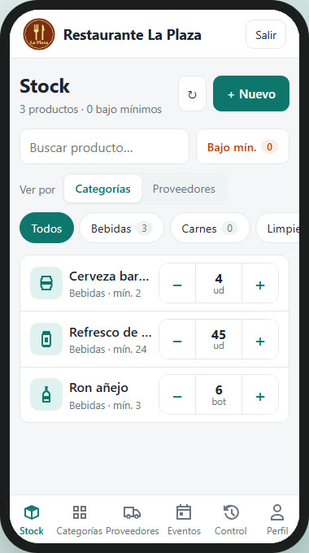
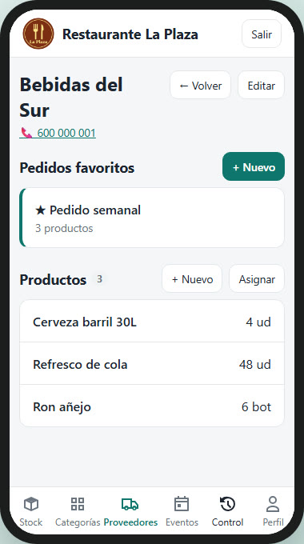
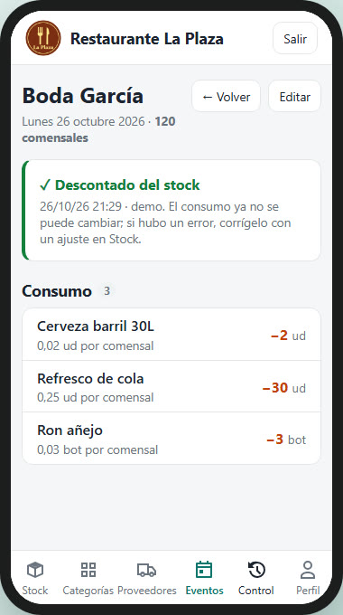
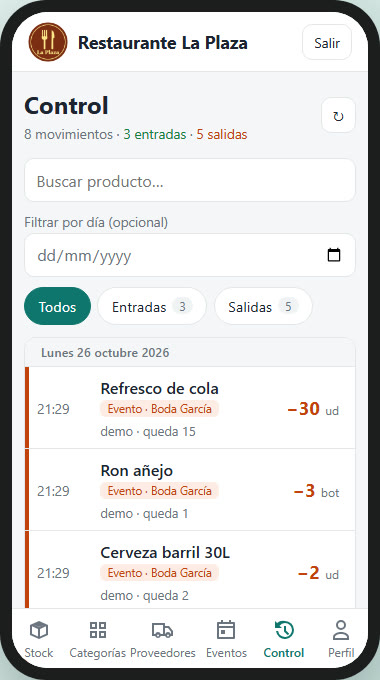
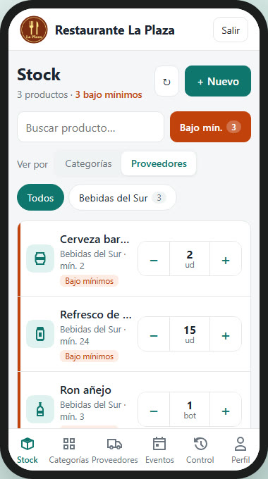
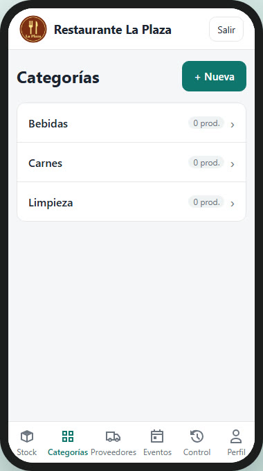

Cómo funciona, en 2 minutos
Desde una empresa vacía hasta el día a día. Datos y empresa ficticios.
Qué hace
Pensada para usarse de pie, en el almacén, con una mano.
Stock
Cada producto con su cantidad, unidad y mínimo. Botones −/+ grandes, entradas y salidas de cualquier cantidad y aviso de «bajo mínimos».
Proveedores
Un producto puede venir de varios proveedores: el recuento es uno solo. Con sus productos, teléfono y notas.
Pedidos favoritos
Guarda lo que pides siempre. Copia la lista para enviarla por WhatsApp y, al recibirlo, súmalo todo al stock de una vez.
Eventos
Apunta el consumo de cada evento y descuéntalo del stock en un paso. Los comensales dan el ratio por persona para los siguientes.
Control
Historial de cada movimiento: quién, cuándo, cuánto y por qué (ajuste, pedido o evento). Los toques seguidos se agrupan en uno.
Tu marca
Perfil de la empresa con su logo, que aparece en la cabecera. Funciona en el navegador y como app Android.
Así se ve
Mobile-first: barra inferior en el móvil, barra superior en tablet y escritorio.






El día a día
- Alta: el administrador crea la empresa y da acceso a cada persona del equipo.
- Perfil: nombre, datos fiscales y logo.
- Catálogo: categorías, proveedores y productos con su mínimo.
- Pedidos: llega la mercancía → «Recibido» y suma al stock.
- Eventos: apunta el consumo y descuéntalo.
- Control: revisa los movimientos y lo que está bajo mínimos.
Cómo está hecha
Sin servidor propio: el front habla directamente con Supabase y la lógica sensible vive en la base de datos.
| Parte | Tecnología |
|---|---|
| Front | Angular 22 (standalone, signals), CSS propio, mobile-first |
| Datos | Supabase: PostgreSQL + Auth + API REST (supabase-js) |
| Seguridad | Login + políticas RLS: solo entra el personal autorizado (tabla staff) |
| Lógica | Funciones atómicas en la BBDD (adjust_stock, receive_order, consume_event) y un trigger que escribe el historial |
| Móvil | Capacitor (APK Android) sobre el mismo front |
| Vídeo | Grabado automáticamente con Playwright sobre un entorno demo |
Ponerla en marcha
- Crea un proyecto en Supabase y ejecuta
supabase/schema.sqlen el SQL Editor (opcional:supabase/seed.sqlcon datos de ejemplo). - Añade el esquema
aletesen Settings › Data API › Exposed schemas. - Crea los usuarios en Authentication › Users y dales acceso:
insert into aletes.staff (email) values ('persona@empresa.com'); insert into aletes.companies (name) values ('Mi restaurante'); - Configura el front y arráncalo:
cd frontend cp src/environments/environment.ts src/environments/environment.local.ts # rellena supabaseUrl y supabaseAnonKey (Project Settings › API) npm install npm start - Para el móvil:
npm run apk(requiere Android Studio).
Más detalle en el README.